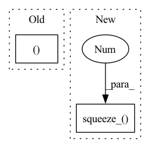

Pattern ID :32642
Before Change
output3 = self.forward_once(input3)
return output1, output2, output3
return output1, output2, output3
def test():
torch.manual_seed(1234)After Change
size = [int(s) for s in feat.size()[2:]]
output = F.avg_pool2d(feat, size)
if self.reid:
output.squeeze_(2 ) .squeeze_(2)
output.div_(output.norm(p=2, dim=1, keepdim=True))
return output
In pattern: SUPERPATTERN
Frequency: 4
Non-data size: 2
Instances Fragment ID: 95026441
Project Name: cv-zmh/human-action-recognition
Commit Name: 2d158bf09726acf3a77fd18d7689bb0f79a24bff
Time: 2021-07-08
Author: zinmoehtoo2015@gmail.com
File Name: src/lib/tracker/deepsort/models/siamese_net.py
M Class Name: SiameseNet
N Class Name: SiameseNet
M Method Name: forward(2)
N Method Name: forward(4)
M Parent Class: nn.Module
N Parent Class: nn.Module
M File Name: src/lib/tracker/deepsort/models/siamese_net.py
N File Name: src/lib/tracker/deepsort/models/siamese_net.py
M Start Line: 43
M End Line: 51
N Start Line: 39
N End Line: 46
Before Change
// Test the image quality difference between the super-resolution image and the original high-resolution image.
print(f"Processing `{os.path.abspath(hr_path)}`...")
psnr, ssim, spectrum = image_quality_assessment(sr_path, hr_path)
total_psnr += psnr
total_ssim += ssim
total_spectrum += spectrumAfter Change
// Cal PSNR
total_psnr += 10. * torch.log10(1. / torch.mean((sr_tensor_y - lr_tensor_y) ** 2))
sr_image_y = sr_tensor_y.mul_(255.0).cpu().squeeze_(0 ) .squeeze_(0).numpy()
sr_image = np.array([sr_image_y, lr_ycbcr[..., 1], lr_ycbcr[..., 2]]).transpose([1, 2, 0])
sr_image = np.clip(imgproc.convert_ycbcr_to_rgb(sr_image), 0.0, 255.0).astype(np.uint8)
sr_image = Image.fromarray(sr_image) Fragment ID: 95026442
Project Name: lornatang/srcnn-pytorch
Commit Name: b957357cc1bbc6e96762df844df48a3e6464fd90
Time: 2021-11-05
Author: liuchangyu1111@gmail.com
File Name: validate.py
M Class Name: AnonimousClass
N Class Name: AnonimousClass
M Method Name: main(0)
N Method Name: main(0)
M Parent Class:
N Parent Class:
M File Name: validate.py
N File Name: validate.py
M Start Line: 177
M End Line: 221
N Start Line: 50
N End Line: 89
Before Change
// Access base leaf samples based on
rnge_out = torch.arange(self.in_features, device=samples.device)
tmp[sample_idx] = samples[sample_idx, rnge_out, ..., parent_indices_in ].view(
self.in_features, cardinality
)
After Change
indices_in_gather = indices_in_gather.view(num_samples, 1, -1, 1).expand(-1, samples.shape[1], -1, -1)
samples = samples.gather(dim=-1, index=indices_in_gather)
samples.squeeze_(-1 ) // Remove num_leaves dimension
return samples
Fragment ID: 95026436
Project Name: braun-steven/simple-einet
Commit Name: e657fc668bd0f87f5e622a8b2549cd9e8ade437a
Time: 2022-01-11
Author: steven.lang.mz@gmail.com
File Name: simple_einet/factorized_leaf_layer.py
M Class Name: FactorizedLeaf
N Class Name: FactorizedLeaf
M Method Name: sample(3)
N Method Name: sample(3)
M Parent Class: AbstractLayer
N Parent Class: AbstractLayer
M File Name: simple_einet/factorized_leaf_layer.py
N File Name: simple_einet/factorized_leaf_layer.py
M Start Line: 63
M End Line: 120
N Start Line: 68
N End Line: 147
Before Change
if lm_module:
topk_hyp["hidden_lm"] = hidden_lm
topk_hyp["logp_score"] += (
lm_weight * log_probs_lm[0, 0, positions[j] ]
)
process_hyps.append(topk_hyp)
// Add norm scoreAfter Change
out = out.log_softmax(dim=-1)
if lm_module:
out.squeeze_(1 )
logits, hidden_lm = lm_module(
input_PN, hx=a_best_hyp["hidden_lm"]
)
log_probs_lm = logits.log_softmax(dim=-1) Fragment ID: 95026439
Project Name: speechbrain/speechbrain
Commit Name: 5c9fc8330e6f766479288bd6b16a6368046d5253
Time: 2020-11-05
Author: ff936tw@gmail.com
File Name: speechbrain/decoders/transducer.py
M Class Name: AnonimousClass
N Class Name: AnonimousClass
M Method Name: transducer_beam_search_decode(11)
N Method Name: transducer_beam_search_decode(11)
M Parent Class:
N Parent Class:
M File Name: speechbrain/decoders/transducer.py
N File Name: speechbrain/decoders/transducer.py
M Start Line: 496
M End Line: 522
N Start Line: 420
N End Line: 496